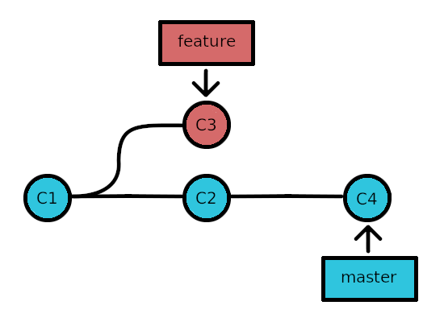
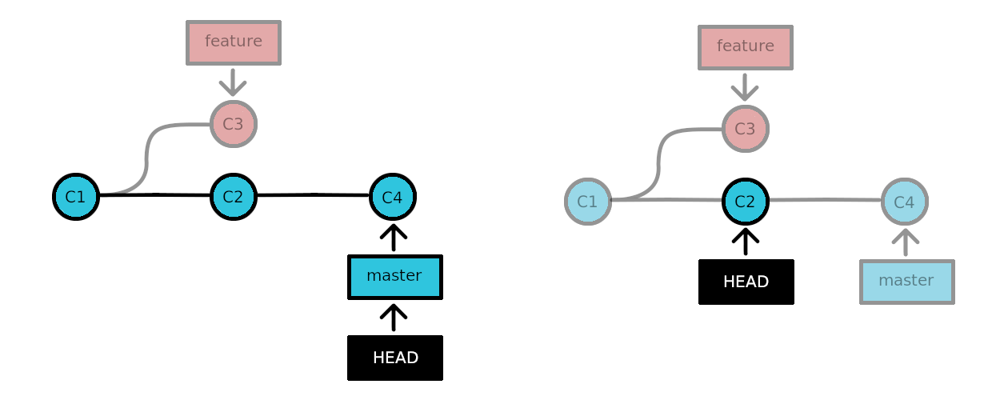
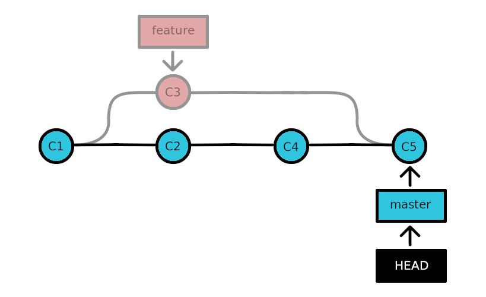

Was ist ... ?
... Git?
Git ist ein Versionierungssystem für Dateien in einem Ordner, das zum kollaborativen Arbeiten geeignet ist, aber auch für die Versionierung lokaler Ordner. Anstatt verschiedene Versionen einer Datei händisch etwa durch Dateinamen wie meine_Datei_12februar.xml, meine_Datei_13februar.xml, meine_Datei_13februar_korrigiert.xml und meine_Datei_13februar_korrigiert_final.xml zu unterscheiden, kann man mit Git die Datei zusammen mit ihrer Entwicklung speichern - und zwar so, dass man jeglichen früheren Zustand später wiederherstellen kann, wenn man das möchte. Die Änderungen an der Datei werden bei jedem Eingriff protokolliert: Es wird also, selbst man eine Datei löscht, nie wirklich etwas unwiderbringlich gelöscht, sondern die Löschung wird lediglich protokolliert.
... ein Repository?
Zentrale Organisationseinheit für Git ist das Repository: der versionierte Ordner mit seiner gesamten History. In einem üblichen, nicht-blanken Repository liegt diese Geschichte und die gesamte Logik des Repos in dem versteckten Ordner .git. Schaut einmal selbst nach: In den Repo-Ordnern von UserA und UserB (/an-online-repo) könnt ihr dieses Verzeichnis finden. Falls ihr es in Windows mit dem Datei-Explorer nicht seht, achtet darauf unter Ansicht das Häkchen bei Ausgeblendete Elemente zu setzen.
Da die gesamte Logik im .git-Ordner liegt, bedeutet das auch: Um ein Repo zu löschen, muss nur dieser Ordner gelöscht werden. Um ein Repo zu kopieren, kann der .git-Ordner in einen anderen Ordner kopiert werden. Es wird weiterhin wie gewohnt funktionieren. Der Punkt ist: Mit der Installation von Git auf einem System wird keine zentrale Registry oder dergleichen angelegt, von der aus alle Repos verwaltet werden würden. Jedes Repository ist stattdessen für sich autark.
... ein bare-Repository?
Blanke Repositorien sind dafür gedacht, nur ein Zugriffspunkt zum Teilen von Daten zu sein. Sie besitzen daher keinen Working Tree (Arbeitsordner) und keine Verknüpfung zu einem anderen, einem Remote-Repository. Sie sind eben selbst reine Remote-Repositorien, die üblicherweise online gespeichert werden. Schaut euch im Vergleich zu den User-Repos nun unser lokales Remote-Repo an-online-repo.git im Tutorial-Ordner an: Ihr könnt diese "Datei" im Terminal oder im Datei-Explorer wie einen Ordner betreten.
... der Working Tree?
Der Working Tree ist der Ordner, in dem der User in einem herkömmlichen lokalen Repository arbeitet: Hier werden die Dateien des Repos gemäß des aktuellen Repo-Zustandes angezeigt. Denn: Entgegen des herkömmlichen Verständnisses von Ordnern und Dateien (nämlich dass es fragile Elemente sind, die auf Nimmerwiedersehen fort sind, wenn man sie löscht) funktioniert der Working Tree wie eine Ansicht: Die eigentliche Speicherung der Daten passiert im versteckten .git-Ordner und je nachdem, welchen Zustand der Daten man sich anschauen möchte, werden die entsprechenden Daten im Working Tree dann angezeigt. Löscht man eine Datei im Working Tree, ist sie damit also nicht aus dem Repository gelöscht.
Der Working Tree ist aber nicht nur ein Ort zum Ansehen von Daten, sondern auch, um Veränderungen an den Daten in das Repo zu speichern. Änderungen sind also immer eine Hinzufügung von Informationen, nichts geht verloren. Was der User zum Speichern von Änderungen tun muss, ist, einen Commit vorzubereiten und durchzuführen.
... ein Commit?
Ein Commit ist ein Snapshot, ein Abbild des Zustandes des Working Trees (genauer gesagt: einer Auswahl der Dateien aus dem Working Tree, des Index) zu einem bestimmten Zeitpunkt: Er beinhaltet Dateien in Form von Blobs, die Ordnerstruktur als Tree sowie Meta-Daten zum Commit (Zeitpunkt des Commits, Username, Kommentar). Das heißt, dass Git mit einem Commit nicht nur die Änderungen zu einem früheren Zeitpunkt oder einzelne Dateien speichert, sondern jeweils immer den gesamten Zustand. Probiert es aus: Wechselt im Terminal in eines der User-Repos /an-online-repo und gebt git ls-tree --full-tree -r HEAD ein. Dies listet euch alle Dateien des letzten Commits inklusive Unterordner auf. Wenn ihr noch keinen zweiten Commit angefertigt habt, tut es jetzt: echo # Dies ist eine zweite Readme-Datei>another_readme.md, git add another_readme.md und git commit -m "eine zweite Readme hinzugefügt". Jetzt gebt noch einmal git ls-tree --full-tree -r HEAD, um euch die Dateien des neuesten Commits anzuschauen: Darin befinden sich beide Readme-Dateien.
Grundsätzlich bedeutet das also: Wenn eine Datei in einem bestimmten Zustand in irgendeinem Commit gespeichert wurde, kann man diese Datei in diesem bestimmten Zustand jederzeit wieder anzeigen lassen, egal wie der Working Tree im Moment auch aussehen mag. Entscheidend ist, dass die entsprechenden Commits, die die Datei in diesem bestimmten Zustand enthalten, in der History des Repos existieren und nicht gelöscht wurden. An dieser Stelle kann schon gesagt werden: Es ist best practice, vergangene Commits nicht zu entfernen, sondern stattdessen unerwünschte Änderungen durch einen weiteren Commit "rückgängig" zu machen. (Dazu dient git revert, mehr dazu siehe unten: Experiment #7: Fehler rückgängig machen)
... ein Blob?
Blob (binary large object) ist die Bezeichnung für die git-interne Art und Weise, Dateien in einem Commit zu speichern.
... ein Tree?
Tree ist ein Begriff für Ordner. Der Working Tree ist der Ordner, in dem der User arbeitet. Mit jedem Commit wird auch immer mindestens ein Tree-Objekt gespeichert, nämlich jenes, das alle Dateien (Blobs) und sonstige Ordner (Trees) des Commits enthält und mit git ls-tree angeschaut werden kann.
... Tracking?
Verändert sich etwas im Working Tree, erkennt Git das: Dateien können in diesem Moment als neu (bisher ungetrackt) oder modifziert (bereits getrackt, aber eben verändert) markiert werden. Tracking meint im eigentlichen und engeren Sinn den Vorgang, die Veränderungen in Dateien zu überwachen, die bereits Teil des letzten Commits waren. Darüberhinaus wird von Git aber auch erkannt, wenn völlig neue Dateien im Working Tree sich befinden, was man auch als eine Form von Tracking im weiteren Sinn verstehen kann.
Möchte man letzteres für bestimmte Dateien und Ordner verhindern, kann im Working Tree die Datei .gitignore angelegt werden, die eine Liste der Dateien und Ordner enthält, die vom Tracking im weiten Sinne ausgeschlossen werden sollen. So kann man Elemente im Working Tree haben, die nicht zum Repo gehören sollen, etwa sensible Daten.
Ist jedoch eine Datei bereits Teil des letzten Commits, reicht die Aufnahme in die .gitignore-Liste nicht aus. Dann muss die betreffende Datei noch zusätzlich mittels git rm --cached <Dateiname> aus dem Tracking des Repos (genauer: aus dem Index) entfernt werden.
... Staging und der Index?
Zwischen dem Working Tree und der History des Repos mit seinen Commits gibt es noch einen Übergangsbereich: die staging area oder den Index. Hier wird der zukünftige Commit zusammengestellt. Der Index enthält ersteinmal alle Dateien und Ordner des letzten Commits in dem Zustand, in dem sie sich zum Zeitpunkt des letzten Commits befanden. Wenn aber nun eine Datei, die Teil des letzten Commits war, verändert wird, ist sie in diesem neuen Zustand nicht mehr Teil des Index. Die Datei muss in ihrem neuen Zustand also ersteinmal wieder zum Index hinzugefügt, also gestaged werden, möchte man sie in den zukünftigen Commit übernehmen: git add <filename>. Das Gleiche gilt für völlig neue Dateien.
Ist der gewünschte Commit im Index schließlich wie gewünscht vorbereitet (überprüfbar mit git status oder git diff --name-only --cached, beides zeigt die Veränderungen im Vergleich zum letzten Commit), kann dieser erzeugt und zur History hinzugefügt werden: git commit -m "ein beliebiger Kommentar zum Commit".
... ein Branch?
Mit Branch (Ast, Abzweigung) wird eine Reihe von zusammengehörigen Commits bezeichnet, deren Ausgangspunkt (oder Basis) ein bestimmter Commit in der History ist. Mit dem allerersten Commit im Repo wird der erste, standardmäßig master genannte Branch, eröffnet. Ab diesem Zeitpunkt können beliebig viele weitere Branches erzeugt werden, die den ersten Commit oder einen zu einem späteren Zeitpunkt erzeugten Commit als Basis verwenden. Die Abbildung zeigt ein Beispiel mit zeitlichem Ablauf: Nachdem auf dem master-Branch die Commits C1 und C2 erzeugt worden sind, wurde auf Basis von C1 ein zweiter Branch feature gestartet und der Commit C3 auf diesem Branch gespeichert.

Üblicherweise ist immer ein Branch ausgecheckt. Das bedeutet, er ist aktiv. Das wiederum heißt zum Einen: Zukünftige Commits werden diesem aktuell ausgecheckten Branch zugeordnet. Und zum Anderen: Im Working Tree sind dann entsprechend die Dateien und Datei-Versionen zu sehen, die zum jüngsten Commit des aktuell ausgecheckten Branches gehören. Der gängige Befehl zum Aktivieren eines Branches lautet git checkout <branchname>.
Branches sind damit ein Möglichkeit, parallel verschiedene Ansichten des Repos zur Verfügung zu haben: Wechselt man den Branch, wechselt auch die Ansicht im Working Tree. Man sagt auch: Der HEAD zeigt auf einen bestimmten Branch.
... HEAD?
HEAD ist eigentlich nur ein Verweis, ein Zeiger, der aber darüber bestimmt, welche Daten aktuell im Working Tree angezeigt werden und ob kommende Commits einem Branch bzw. welchem Branch zugeordnet werden. HEAD zeigt üblicherweise auf den aktuell ausgecheckten Branch. Gebt einmal in einem der User-Repos git show ein: Wenn ihr gerade auf dem master-Branch seid, ist in der ersten Zeile der nun angezeigten Nachricht die Information HEAD -> master zu sehen. Der master-Branch ist also gerade aktiv. Es ist jedoch auch möglich, einen bestimmten Commit auszuchecken.

Dann hat das Repo einen sogenannten detached HEAD: Es ist dann auf keinen Branch mehr eingestellt und zukünftige Commits werden dadurch keinem existierenden Branch mehr zugeordnet. Solche zukünftigen Commits im "luftleeren" bzw. branchleeren Raum existieren also außerhalb der History und gehen in dem Moment verloren, wenn wieder einer der breits bestehenden Branches aktiviert wird. Möchte man diese Commits aber doch behalten, kann man für sie einfach einen neuen Branch eröffnen - mit dem aktuell ausgecheckten Commit als Basis. Die zuvor branchlosen Commits sind dann automatisch Teil des neuen Branches.
Wofür ist das gut? Mit einem detached HEAD zu arbeiten und einen bestimmten Commit auszuchecken, ist genau das Feature, was Git zu einem nützlichen Tool macht: Es bietet die Möglichkeit, einen bestimmten vergangenen Zustand des Repos im Working Tree anzuschauen. Das ist nützlich. Man muss jedoch auch immer im Auge behalten, ob man sich gerade auf einem Branch befindet bzw. auf welchem Branch. Mit git status kann schnell geprüft werden, ob man im Moment einen detached HEAD hat.
Um einen Commit auszuchecken, braucht man zuvor dessen Hash-Wert: Gebt einmal git log in einem der lokalen Repos ein und werdet für jeden Commit eine lange Reihe an Buchstaben und Zahlen sehen. Das ist ein Hash-Wert, der als ID für den Commit fungiert. Für den checkout-Befehl reicht es aus, die ersten Zeichen dieses Hash-Wertes zu verwenden, sofern es nicht mehrere Commits in der History gibt, deren Hash-Wert mit den gleichen Zeichen beginnen: git checkout 9ffe98 würde bei einem Hash-Wert von 9ffe980b31a28a9ce2795a1756e87172af48fb24 sehr wahrscheinlich genügen.
git log kann eventuell eine längere Liste an Commits anzeigen. Im Terminal wird diese Liste womöglich in Abschnitten angezeigt. Mit Leerzeichen könnt ihr zum nächsten Abschnitt wechseln und mit Q die Listenansicht verlassen.
... mergen?
Mergen (verschmelzen) ist ein Algorithmus, der zwei Versionen eines Branches (lokal und remote) oder zwei verschiedene Branches (etwa master und einen zweiten Branch) zusammenzuführt. Ersteres ist etwa nötig, wenn mehrere User auf einem Branch arbeiten: UserA macht einen Commit A und pusht ihn. Währenddessen hat UserB lokal bei sich einen anderen Commit B erzeugt, ohne vorher Commit A gefetcht zu haben. Um den Branch danach für alle User auf einen Stand zu bringen, der Commit A und B gleichermaßen enthält, müssen beide Versionen des Branches in einen Commit C gemergt werden. Analog funktioniert es im zweiten Fall, wie in der Grafik zu sehen: Der feature-Branch enthält einen Commit C3, der im master unbekannt ist. Hier wird nun vom master aus gesehen der feature-Branch in den master gemergt, was bedeutet, dass die Änderungen von C3 zusammen mit den Änderungen von C4 (der letzte Commit vor dem Merge) im neuen Commit C5 auf dem master-Branch zusammengebracht werden.

Merkmal des Mergens ist in allen Fällen, dass ein neuer Commit erzeugt wird, der alle Änderungen aus den letzten Commits der beiden beteiligten Branches oder Branch-Versionen beinhaltet. Dabei kann es zu Konflikten kommen, die Git entweder automatisch selbst löst oder die der User lösen muss, indem er etwa Dateien, in denen sich Änderungen aus den beteiligten Commits widersprechen, händisch bearbeitet, anschließend speichert und den Merge-Vorgang fortsetzt. Wie das genau funktioniert, könnt ihr im Experiment zu Merge-Konflikten untersuchen.
... die History?
Mit History ist die gesamgte Abfolge von Commits, Branch-Eröffnungen und -Schließungen eines Repos gemeint, eben dessen Geschichte, die alle vergangenen Zustände der in den Commits gespeicherten Dateien und Ordner enthält.
... ein Remote-Repository?
In einer Beziehung zwischen lokalem und blanken Remote-Repository ist letzteres das Repository, auf das mit mehreren lokalen Repositorien zugegriffen werden kann. Dafür haben lokale Repositorien ein Verknüpfung mit ihrem Remote, die üblicherweise origin heißt, aber auch unbenannt werden kann. origin ist schlicht ein Alias für eine Pfadangabe. Ein lokales Repo kann sogar Verweise zu mehreren Remotes besitzen, was es etwa erlaubt, Änderungen direkt an mehrere Remote-Repositorien zu schicken.
Schaut in einem eurer lokalen Repos einmal nach, welche Remote-Pfade vorhanden sind: git remote -v. Zudem könnt ihr euch die Details zu jedem Remote-Pfad anschauen, etwa zu origin: git remote show origin. Die Fetch- und Push-URLs (also die Ziel-URL für Hoch- und Runterladen von Änderungen zu einem Remote-Repo) sehen in unserem Tutorial-Setup etwas merkwürdig aus, beispielsweise: C:/repositories/git_tutorial/UserB/..\an-online-repo.git. Dies kommt durch den Pfad zustande, den wir oben zum Klonen des Remote-Repos verwendet haben. Die zwei Punkte im Pfad bedeuten, in den Parent-Ordner git_tutorial zu wechseln, wo sich das Remote-Repo ja befindet. Im Normalfall der Arbeit mit einem Online-Remote-Repository steckt hinter origin eine Web-URL zu einer .git-Datei.
Wichtig ist: Insgesamt sorgt die Struktur mit lokalen und Remote-Repositorien dafür, dass es immer zwei Versionen des Repos gibt, nämlich das lokale und das Remote-Repo. Jeder lokale Branch hat also immer ein Remote-Gegenüber, sofern man den lokalen Branch im Remote-Repo veröffentlicht hat. Mit git branch -avv werden alle lokalen Branches und die Verweise auf die bekannten Remote-Branches angezeigt, letztere üblicherweise in Pfadschreibweise: remotes/origin/master ist der Name für den Master-Branch des Remote-Repositories und master ist euer lokaler Master-Branch.
Die Befehle git fetch, git pull und git push dienen zur Kommunikation mit dem Remote-Repo: fetch lädt die neuesten Änderungen vom Remote herunter, ohne sie auf das lokale Repo anzuwenden. pull fügt die Änderungen im aktuell aktiven Branch mittels merge ein. Und push lädt neue Commits im aktiven lokalen Branch (bzw. sogar den ganzen Branch, falls dieser im Remote noch unbekannt ist) in das Remote-Repo hoch. Im Experiment #1 kann der Umgang mit den Befehlen sich genauer angeschaut werden.
... stashen?
Hat man Änderungen am Working Tree vorgenommen und vielleicht auch einige davon schon gestaged, möchte diese Änderungen aber noch nicht committen, bietet git stash push die Möglichkeit, die Änderungen zu verbergen und in einer Art Zwischenspeicher abzulegen. Das ist der Stash (Versteck).
Es ist ein sehr nützliches Feature von Git, falls man zwischendurch in seiner Arbeit am Repo einmal den Branch wechseln möchte. In diesem Fall würden die nicht committeten Änderungen am Working Tree und am Index in dem Moment verloren gehen, wenn man auf einen anderen bereits existierenden Branch mittels git checkout wechselt. Mit dem Stash kann man das Problem umgehen und zu einem späteren Zeitpunkt die Änderungen wieder hervorholen. Wie das genau funktioniert, ist in einem der Experimente unten erläutert.
... ein Tag?
Ein Tag ist ein Verweis auf einen bestimmten Commit. Tags können individuell benannt werden und sind also letztlich Aliase, die auch als Parameter des git checkout-Befehls funktionieren, um diesen bestimmten Commit auszuchecken, auf den der Tag verweist. In der Praxis werden Tags häufig zum Markieren von Release-Versionen des Codes bzw. der Daten des Repos verwendet, beispielweise v1.0. Um sich diese Version im Code dann anzuschauen, kann der Commit via Tag ausgecheckt werden: git checkout v1.0.
... GitHub und GitLab?
GitHub und GitLab sind Beispiele für Hosting- und Management-Plattformen für Git-Repositorien. Sie bieten Git-Funktionalitäten und über Git hinausgehende Tools zum kollaborativen Arbeiten hinter einer grafischen Benutzeroberfläche an. Änderungen am Online-Repo können dort direkt im Browser vorgenommen werden: Dateien hinzufügen, löschen, ändern, Branches erstellen, mergen und entfernen. Es ist jedoch auch möglich, ganz ohne die Websites über lokale Klone mit den GitHub- und GitLab-Repositorien zu arbeiten. In speziellen Situationen ist das mitunter sogar gewünscht, da die Implementierungen von Git auf den Plattformen in ihrem Verhalten davon abweichen können, wie Git sich normalerweise verhalten würde (Beispiel).